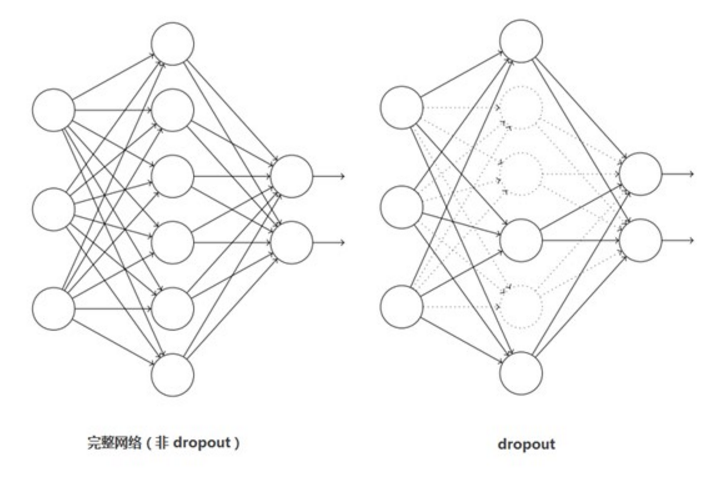

原文连接:https://www.cnblogs.com/wj-1314/p/10767561.html
2012年，Alex Krizhevsky、Ilya Sutskever在多伦多大学Geoff Hinton的实验室设计出了一个深层的卷积神经网络AlexNet，夺得了2012年ImageNet LSVRC的冠军，且准确率远超第二名（top5错误率为15.3%，第二名为26.2%），引起了很大的轰动。AlexNet可以说是具有历史意义的一个网络结构，在此之前，深度学习已经沉寂了很长时间，自2012年AlexNet诞生之后，后面的ImageNet冠军都是用卷积神经网络（CNN）来做的，并且层次越来越深，使得CNN成为在图像识别分类的核心算法模型，带来了深度学习的大爆发。
下面首先学习AlexNet网络的创新点，然后在学习AlexNet的网络结构，最后在用代码实现AlexNet。
1，AlexNet网络的创新点
AlexNet将LeNet的思想发扬光大，把CNN的基本原理应用到了很深很宽的网络中。AlexNet主要使用到的新技术点如下：
（1）成功使用ReLU作为CNN的激活函数，并验证其效果在较深的网络超过了Sigmoid，成功解决了Sigmoid在网络较深时的梯度弥散问题。虽然ReLU激活函数在很久之前就被提出了，但直到AlexNet的出现才将其发扬光大。
在最初的感知机模型中，输入和输出的关系如下：
虽然只是单纯的线性关系，这样的网络结构有很大的局限性：即使用很多这样结构的网络层叠加，其输出和输入仍然是线性关系，无法处理有非线性关系的输入输出。因此，对每个神经元的输出做个非线性的转换也就是，将上面的加权求和的结果输入到一个非线性函数，也就是激活函数中。这样，由于激活函数的引入，多个网络层的叠加就不再是单纯的线性变换，而是具有更强的表现能力。
在网络层较少时，Sigmoid函数的特性能够很好的满足激活函数的作用：它把一个实数压缩至0到1之间，当输入的数字非常大的时候，结果会接近1,；当输入非常大的负数时，则会得到接近0的结果。这种特性，能够很好的模拟神经元在受刺激后，是否被激活向后传递信息（输出为0,几乎不被激活；输出为1，完全被激活）。Sigmoid函数一个很大的问题就是梯度饱和。观察Sigmoid函数的曲线，当输入的数字较大（或较小）时，其函数值趋于不变，其导数变得非常的小。这样在层数很多的网络结构中，进行反向传播时，由于很多个很小的Sigmoid导数累成，导致其结果趋于0，权值更新较慢。
（2）训练时使用Dropout随机忽略一部分神经元，以避免模型过拟合。Dropout虽有单独的论文论述，但是AlexNet将其实用化，通过实践证实了它的效果。在AlexNet中主要是最后几个全连接层使用了Dropout。
Dropout应该是AlexNet网络中一个很大的创新，现在神经网络中的必备结构之一。Dropout也可以看做是一种模型组合，每次生成的网络结构都不一样，通过组合多个模型的方式能够有效地减少过拟合。Dropout只需要两倍的训练时间即可实现模型组合（类似去平均）的效果。非常高效。

（3）在CNN中使用重叠的最大池化层。此前CNN中普遍使用平均池化，AlexNet全部使用最大池化，避免平均池化的模糊化效果，并且AlexNet中提出让步长比池化核的尺寸小，这样池化层的输出之间会有重叠和覆盖，提升了特征的丰富性。
一般的池化（pooling）是不重叠的，池化区域的窗口大小与步长相等，如下图所示：
在AlexNet中使用的池化（pooling）却是可重叠的，也就是说，在池化的时候，每次移动的步长小于池化的窗口长度。
AlexNet池化的大小为3*3的正方形，每次池化移动步长为2，这样就会出现重叠。重叠池化可以避免过拟合，这个策略共享了0.3%的Top-5错误率。
（4）提出了LRN层，对局部神经元的活动创建竞争机制，使得其中响应比较大的值变得相对更大，并抑制其他反馈较小的神经元，增强了模型的泛化能力。
LRN层，全称 Local Response Normalization（局部响应归一化）。核心思想就是利用临近的数据做归一化，这个策略贡献了1.2%的Top-5错误率。
ReLU具有良好性质：当输入为正，其导数为1，有效的避免神经元停止学习，也就是死掉。
在神经生物学有一个概念叫做“侧抑制”（lateral inhibitio），指的是被激活的神经元抑制相邻神经元。归一化（normalization）的目的是“抑制”，局部归一化就是借鉴了“侧抑制”的思想来实现局部抑制，尤其当使用ReLU时这种“侧抑制”很管用，因为ReLU的响应结果是无界的（可以非常大），所以需要归一化。使用局部归一化的方案有助于增加泛化能力。
在神经网络中，我们用激活函数将神经元的输出做一个非线性映射，但tanh和sigmoid这些传统的激活函数的值域都是有范围的，但是ReLU激活函数得到的值域没有一个区间，所以要对ReLU得到的结果进行归一化。也就是Local Response Normalization。局部响应归一化的方法如下图的公式：

代表的时ReLU 在第 i 个 kernel 的（x，y）位置的输出， n表示的是 的邻居个数。N表示该 kernel 的总数量， 表示的时 LRN的结果。ReLU输出的结果和他周围一定范围的邻居做一个局部的归一化，怎么理解呢？我觉得这里有些类似于我们的最大最小归一化，假设有一个向量 X = [X_1, X_2, ....X_n] 那么将所有的数归一化到 0~1之间的归一化规则是：
上面那个公式有着类似的功能，只不过稍微负载一些，首先运算略微复杂，其次还有一些其他的参数 alpah, beta, k。
我们看看上图，每一个矩阵表示的是一个卷积核生成的feature map，所有的pixel已经经过的了ReLU 激活函数，现在我们都要对具体的 pixel进行局部的归一化。假设绿色箭头指向的是第 i 个 kernel对应的map，其余的四个蓝色箭头是它周围的邻居 kernel层对应的map，假设矩阵中间的绿色的 pixel 的位置为（x, y），那么我们需要提取出来进行局部归一化的数据就是周围邻居 kernel 对应的 map(x, y) 位置的 pixel 的值。也就是上面式子的 ，然后把这些邻居 pixel 的值平方再加和。乘以一个稀疏 alpha 再加上一个常数 k ，然后 beta 次幂，就算分母，分子就是第 i 个 kernel 对应的 map 的（x, y）位置的 pixel的值。这样理解后我觉得不是那么的复杂了。
关键是参数 alpha，beta，k 如何确定，论文中说是在验证集中确定，最终确定的结果为：
（5）使用CUDA加速神经卷积网络的训练，利用GPU强大的并行计算能力，处理神经网络训练时大量的矩阵运算。AlexNet 使用了两块 GTX 580 GPU 进行训练，单个 CTX 580 只有3GB显存，这限制了可训练的网络的最大规模。因此作者将AlexNet分布在两个GPU上，在每个GPU的显存中存储一半的神经元的参数。因此GPU之间通信方便，可以互相访问显存，而不需要通过主机内存，所以同时使用多块GPU也是非常高效的。同时，AlexNet的设计让GPU之间的通信只在网络的某些层进行，控制了通信的性能损耗。
（6）数据增强，随机的从256*256的原始图像中截取224*224大小的区域（以及水平翻转的镜像），相当于增加了（256-224）2*2=2048倍的数据量。如果没有数据增强，仅靠原始的数据量，参数众多的CNN会陷入过拟合中，使用了数据增强后可以大大减轻过拟合，提高泛化能力。进行预测时，则是取图片的四个角加中间共5个位置，并进行左右翻转，一共获得10张图片，对他们进行预测并对10次结果求均值。同时，AlexNet论文中提到了会对图像的RGB数据进行PCA处理，并对主成分做一个标准差为0.1的高斯扰动，增加了一些噪声，这个Trick会让错误率再降低1%。
有一种观点认为神经网络是靠数据喂出来的，如果能够增加训练数据，提供海量数据进行训练，则能够有效提升算法的准确率，因为这样可以避免过拟合，从而可以进一步增大、加深网络结构。而当训练数据有限时，可以通过一些变换从已有的训练数据集中生成一些新的数据，以快速地扩充训练数据。
其中，最简单、通用的图像数据变形的方式：水平翻转图像，从原始图像中随机裁剪、平移变换，颜色、光照变换。
AlexNet在训练时候，在数据扩充（data augmentation）这样处理：
- （1）随机裁剪，对256×256的图片进行随机裁剪到224×224，然后进行水平翻转，相当于将样本数量增加了（（256-224）^2）×2=2048倍；
- （2）测试的时候，对左上、右上、左下、右下、中间分别做了5次裁剪，然后翻转，共10个裁剪，之后对结果求平均。作者说，如果不做随机裁剪，大网络基本上都过拟合；
- （3）对RGB空间做PCA（主成分分析），然后对主成分做一个（0, 0.1）的高斯扰动，也就是对颜色、光照作变换，结果使错误率又下降了1%
（7） Overlapping Pooling（重叠池化）
在传统的CNN中，卷积之后一般连接一个池化层，这个池化运算是没有重叠的池化运算。更加确切的说，池化可以被看作是由间隔为 s 的池化网络构成的，将 z*z 的池化单元的中心放在这个网络上以完成池化操作，如果 s = z ，那么这个操作就是传统的 CNN 池化操作，如果 s < z ，就是重叠池化操作，本文就是使用这个方法。
一般的池化层因为没有重叠，所以pool_size 和 stride一般是相等的，例如8×8的一个图像，如果池化层的尺寸是2×2 ，那么经过池化后的操作得到的图像是 4×4大小，这种设置叫做不覆盖的池化操作，如果 stride < pool_size, 那么就会产生覆盖的池化操作，这种有点类似于convolutional化的操作，这样可以得到更准确的结果。在top-1，和top-5中使用覆盖的池化操作分别将error rate降低了0.4%和0.3%。论文中说，在训练模型过程中，覆盖的池化层更不容易过拟合。
2，AlexNet网络的网络结构
整个AlexNet有8个需要训练参数的层（不包括池化层和LRN层），前5层为卷积层，后3层为全连接层，如下图所示，ALexNet最后一层是有1000类输出的Softmax层用作分类。LRN层出现在第一个及第二个卷积层后，而最大池化层出现在两个LRN层及最后一个卷积层后，ReLU激活函数则应用在这8层每一层的后面。因为AlexNet训练时使用了两块GPU，因此这个结构图中不少组件被拆为两部分。现在我们GPU的显存可以放下全部的模型参数，因此只考虑一块GPU的情况即可。
AlexNet 每层的超参数如上图所示，其中输入的图片尺寸为224*224，第一个卷积层使用了较大的卷积核尺寸11*11，步长为4，有96个卷积核；紧接着一个LRN层；然后是一个3*3的最大池化层，步长为2,。这之后的卷积核尺寸都比较小，都是5*5 或者3*3 的大小，并且步长都为1，即会扫描全图所有像素；而最大池化层依然保持为3*3，并且步长为2。我们会发现一个比较有意思的现象，在前几个卷积层，虽然计算量很大，但参数量很小，都在1M 左右甚至更小，只占AlexNet 总参数量的很小一部分。这就是卷积层有用的地方，可以通过较小的参数量提取有效的特征，而如果前几层直接使用全连接层，那么参数量和计算量将成为天文数字。虽然每一个卷积层占整个网络的参数量的1%都不到，但是如果去掉任何一个卷积层，都会使网络的分类性能大幅的下降。
（注意：这个224，其实经过计算（224-11）/4=54.75，而不是论文中的55*55，而是227*227，所以假如使用224*224，就让padding=2）
其实下图更能让人理解AlexNet网络结构：
AlexNet 每层的超参数及参数数量：
那下面对照着图，我们再详细分析一波这个网络：
其实论文中是使用两块GPU来处理的，这就导致了第一个AlexNet的网络结构是分开的，那后面我们用一个架构网络来分析，现在也都9012年了，科技更发达了，所以使用一块GPU完全可以运算，我们下面来详细分析一下这8层网络，包括5层卷积，3层全连接。（论文中提到过，五层卷积，去掉任意一层都会使结果不好，所以这个网络的深度似乎比较重要。）
2.1 卷积C1
该层的处理流程是：卷积——》 ReLU ——》池化 ——》 归一化
- 卷积：输入的是227*227，使用96个11*11*3的卷积核，得到的FeatureMap为55*55*96
- ReLU：将卷积层输出的FeatureMap 输入到ReLU函数中。
- 池化：使用3*3 步长为2的池化单位（重叠池化，步长小于池化单元的宽度），输出为27*27*96（（55-3）/2+1=27）
- 局部响应归一化：使用k =2，n=5，alpha=10-4, beta=0.75进行局部归一化，输出仍然是27*27*96，输出分为两组，每组为27*27*48。
卷积后的图形大小是怎么样的呢？
width = （227 + 2 * padding - kerne_size）/ stride + 1 = 55
height = （227 + 2 * padding - kerne_size）/ stride + 1 = 55
dimention = 96
2.2 卷积层C2
该层的处理流程是：卷积——》 ReLU ——》池化 ——》 归一化
- 卷积：输入的是2组27*27*48，使用2组，每组128个尺寸为5*5*48的卷积核，并做了边缘填充 padding=2，卷积的步长为1，则输出的FeatureMap为2组，每组的大小为 27*27*128，（（27 + 2*2-5）/1+1=27）
- ReLU：将卷积层输出的FeatureMap 输入到ReLU函数中。
- 池化：使用3*3 步长为2的池化单位（重叠池化，步长小于池化单元的宽度），池化后图像的尺寸为（27-3）/2+1=12，输出为13*13*256
- 局部响应归一化：使用k =2，n=5，alpha=10-4, beta=0.75进行局部归一化，输出仍然是13*13*256，输出分为两组，每组为13*13*128。
2.3 卷积层C3
该层的处理流程是： 卷积——》ReLU
-
卷积，输入是,13*13*256，使用2组共384尺寸为3*3*256的卷积核，做了边缘填充padding=1，卷积的步长为1，则输出的FeatureMap 为13*13*384
-
ReLU，将卷积层输出的FeatureMap输入到ReLU函数中
2.4 卷积层C4
该层的处理流程是： 卷积——》ReLU
-
卷积，输入是13*13*384，分为两组，每组13*13*192，做了边缘填充padding=1，卷积的步长为1，则输出的Featuremap为13*13*384
-
ReLU，将卷积层输出的FeatureMap输入到ReLU函数中
2.5 卷积层C5
该层的处理流程是：卷积——》 ReLU ——》池化
- 卷积：输入的是13*13*384，分为两组，每组13*13*192，使用两组，每组为128，尺寸为3*3*192的卷积核，做了边缘填充padding=1，卷积的步长为1，则输出的FeatureMap为13*13*256
- ReLU：将卷积层输出的FeatureMap 输入到ReLU函数中。
- 池化：使用3*3 步长为2的池化单位（重叠池化，步长小于池化单元的宽度），池化后图像的尺寸为（13-3）/2+1=12，输出为6*6*256
2.6 全连接层FC6
流程为：（卷积）全连接——》 ReLU ——》 Dropout
- 卷积（全连接）：输入为6*6*256，该层有4096个卷积核，每个卷积核的大小为6*6*256.由于卷积核的尺寸刚好与待处理特征图（输入）的尺寸相同，即卷积核中的每个系数只与特征图（输入）尺寸的一个像素值相乘，一一对应，因此，该层被称为全连接层。由于卷积核与特征图的尺寸相同，卷积运算后只有一个值，因此，卷积后的像素层尺寸为 4096*1*1，即有4096个神经元。
- ReLU：这4096个运算结果通过ReLU激活函数生成4096个值
- Dropout：抑制过拟合，随机的断开某些神经元的连接或者是不激活某些神经元
2.7 全连接层FC7
流程为：全连接——》 ReLU ——》 Dropout
- 全连接：输入为4096的向量
- ReLU：这4096个运算结果通过ReLU激活函数生成4096个值
- Dropout：抑制过拟合，随机的断开某些神经元的连接或者是不激活某些神经元
2.8 输出层
第七层的神经元的个数为 4096，第八层最终输出 softmax为1000个。
3，AlexNet 参数数量
卷积层的参数 = 卷积核的数量 * 卷积核 + 偏置
- C1：96个11*11*3的卷积核，96*11*11*3 + 96 = 34848
- C2：2组，每组128个5*5*48的卷积核，（128*5*5*48+128）*2=307456
- C3：384个3*3*256的卷积核，3*3*256*384+384=885120
- C4：2组，每组192个3*3*192的卷积核，（3*3*192*192+192）*2=663936
- C5：2组，每组128个3*3*192的卷积核，（3*3*192*128+128）*2=442624
- FC6：4096个6*6*256的卷积核，6*6*256*4096+4096=37752832
- FC7:4096*4096+4096=16781312
- output：4096+1000=4096000
卷积层 C2,C4,C5中的卷积核只和位于同一GPU的上一层的FeatureMap相连。从上面可以看出，参数大多数集中在全连接层，在卷积层由于权值共享，权值参数较少。
4，AlexNet网络的TensorFlow实现
因为使用 ImageNet数据集训练一个完整的AlexNet耗时非常长，因此下面学习的AlexNet的实现将不涉及实际数据的训练。我们会建立一个完整的ALexNet卷积神经网络，然后对它每个batch的前馈计算（forward）和反馈计算（backward）的速度进行测试。这里使用随机图片数据来计算每轮前馈，反馈的平均耗时。当然也可以下载ImageNet数据并使用AlexNet网络完成训练，并在测试集上进行测试。
首先，定义一个用来显示网络每一层结构的函数 print_actications，展示每一个卷积层或池化层输出 tensor 的尺寸。这个函数一般接受一个 tensor作为输入，并显示其名称（t.op.name）和 tensor尺寸（t.get_shape.as_list()）。
# 定义一个用来显示网络每一层结构的函数 print_actications 展示每一个卷积层或者输出tensor的尺寸
# 此函数接受一个tensor作为输入，并显示其名称（t.op.name）和tensor尺寸
def print_activations(t):
print(t.op.name, ' ', t.get_shape().as_list())
接下来设计AlexNet的网络结构，我们先定义函数 inference，它接受 images作为输入，返回最后一层 pool5（第5个池化层）及 paramenters（AlexNet 中所有需要训练的模型参数）。这个 inference 函数将会很大，包括多个卷积和池化层，因此下面将拆分学习。
首先是第一个卷积层 conv1，这里使用 TensorFlow 中的 name_scope，通过 with.tf.name_scope('conv1') as scope 可以将 scope 内生成的 Variable 自动命名为 conv1/xxx，便于区分不同卷积层之间的组件。然后定义第一个卷积层，和之前一样使用 tf.truncated_normal 截断的正态分布函数（标准差为0.1）初始化卷积核的参数 kernel。卷积核尺寸为11*11，颜色通道为 3 ，卷积核数量为64.准确好了 kernel ，再使用 tf.nn.conv2d 对输入 images 完成卷积操作，我们将 strides 步长设置为4*4（即在图片上每4*4 区域只取样一次，横向间隔是4，纵向间隔也为4，每次取样的卷积核大小都是11*11），padding模式设为SAME。将卷积层的biases全部初始化为0，再使用 tf.nn.bias_add 将 conv 和 biases 加起来，并使用激活函数 tf.nn.relu 对结果进行非线性处理。最后使用 print_actations 将这一层最后输出的 tensor conv1 的结构打印出来，并将这一层可训练的参数 kernel，biases 添加到 parameters中。
def inference(images):
parameters = []
with tf.name_scope('conv1') as scope:
kernel = tf.Variable(tf.truncated_normal([11, 11, 3, 64],
dtype=tf.float32, stddev=1e-1), name='weights')
conv = tf.nn.conv2d(images, kernel, [1, 4, 4, 1], padding='SAME')
biases = tf.Variable(tf.constant(0.0, shape=[64], dtype=tf.float32),
trainable=True, name='biases')
bias = tf.nn.bias_add(conv, biases)
conv1 = tf.nn.relu(bias, name=scope)
print_activations(conv1)
parameters += [kernel, biases]
在第一个卷积层后再添加LRN层和最大池化层。先使用 tf.nn.lrn 对前面输出的 tensor conv1 进行 LRN 处理，这里使用的 depth_radius 设为4，bias设为1，alpha为0.001/9，beta为0.75，基本都是AlexNet 的论文中的推荐值。不过目前除了 AlexNet，其他经典的卷积神经网络模型都放弃了 LRN （主要是效果不明显），而我们使用 LRN 也会让前馈，反馈的速度大大下降（整体速度降到1/3），大家可以支柱选择是否使用 LRN。下面使用 tf.nn.max_pool 对前面的输出 lrn1 进行最大池化处理，这里的池化尺寸为 3*3，即将3*3大小的像素块降为 1*1 的像素，取样的步长为 2*2，padding 模式设为 VALID，即取样时不能超过边框，不像SAME模式那样可以填充边界外的点。最后将输出结果 pool1 的结构打印出来。
lrn1 = tf.nn.lrn(conv1, 4, bias=1.0, alpha=0.001/9, beta=0.75, name='lrn1')
pool1 = tf.nn.max_pool(lrn1, ksize=[1, 3, 3, 1], strides=[1, 2, 2, 1],
padding='VALID', name='pool1')
print_activations(pool1)
接下来设计第二个卷积层，大部分步骤和第一个卷积层相同，只有几个参数不同。主要区别在于我们的卷积核尺寸是 5*5，输入通道数（即上一层输出通道数，也就是上一层卷积核数量）为64，卷积核数量为192。同时，卷积的步长也全部设为1，即扫描全图像素。
with tf.name_scope('conv2') as scope:
kernel = tf.Variable(tf.truncated_normal([5, 5, 64, 192],
dtype=tf.float32, stddev=1e-1),
name='weights')
conv = tf.nn.conv2d(pool1, kernel, [1, 1, 1, 1], padding='SAME')
biases = tf.Variable(tf.constant(0.0, shape=[192],
dtype=tf.float32),
trainable=True, name='biases')
bias = tf.nn.bias_add(conv, biases)
conv2 = tf.nn.relu(bias, name=scope)
parameters += [kernel, biases]
print_activations(conv2)
接下来对第二个卷积层的输出 conv2 进行处理，同样先做 LRN处理，再进行最大池化处理，参数和之前完全一样，这里不再赘述了。
# 接下来对第二个卷积层的输出 conv2 进行处理，同样是做了LRN处理，再进行最大池化处理
lrn2 = tf.nn.lrn(conv2, 4, bias=1.0, alpha=0.001/9, beta=0.75, name='lrn2')
pool2 = tf.nn.max_pool(lrn2, ksize=[1, 3, 3, 1], strides=[1, 2, 2, 1],
padding='VALID', name='pool2')
print_activations(pool2)
接下来创建第三个卷积层，基本结构和前面两个类似，也只是参数不同。这一层的卷积核尺寸为3*3，输入的通道数为192，卷积核数量继续扩大为384，同样卷积的步长全部为1，其他地方和前面的保持一致。
# 第三个卷积层
with tf.name_scope('conv3') as scope:
kernel = tf.Variable(tf.truncated_normal([3, 3, 192, 384],
dtype=tf.float32,stddev=1e-1),
name='weights')
conv = tf.nn.conv2d(pool2, kernel, [1, 1, 1, 1], padding='SAME')
biases = tf.Variable(tf.constant(0.0, shape=[384],
dtype=tf.float32),
trainable=True, name='biases')
bias = tf.nn.bias_add(conv, biases)
conv3 = tf.nn.relu(bias, name=scope)
parameters += [kernel, biases]
print_activations(conv3)
第四个卷积层和之前也类似，这一层的卷积核尺寸为3*3，输入通道数为384，但是卷积核数量降为256。
# 第四个卷积层，核尺寸为3*3，输入通道数为384， 但是卷积核数量降低为256
with tf.name_scope('conv4') as scope:
kernel = tf.Variable(tf.truncated_normal([3, 3, 384, 256],
dtype=tf.float32, stddev=1e-1),
name='weights')
conv = tf.nn.conv2d(conv3, kernel, [1, 1, 1, 1], padding='SAME')
biases = tf.Variable(tf.constant(0.0, shape=[256],
dtype=tf.float32),
trainable=True, name='biases')
bias = tf.nn.bias_add(conv, biases)
conv4 = tf.nn.relu(bias, name=scope)
parameters += [kernel, biases]
print_activations(conv4)
最后的第五个卷积层同样是3*3 大小的卷积核，输入通道数为256，卷积核数量也为256。
# 第五个卷积层同样是3*3大小的卷积核，输入通道数为256， 卷积核数量也是256
with tf.name_scope('conv5') as scope:
kernel = tf.Variable(tf.truncated_normal([3, 3, 256, 256],
dtype=tf.float32, stddev=1e-1),
name='weights')
conv = tf.nn.conv2d(conv4, kernel, [1, 1, 1, 1], padding='SAME')
biases = tf.Variable(tf.constant(0.0, shape=[256],
dtype=tf.float32),
trainable=True, name='biases')
bias = tf.nn.bias_add(conv, biases)
conv5 = tf.nn.relu(bias, name=scope)
parameters += [kernel, biases]
print_activations(conv5)
在第五个卷积层之后，还有一个最大池化层，这个池化层和前两个卷积层后的池化层一致，最后我们返回这个池化层的输出 pool5。至此，inference函数就完成了，它可以创建 AlexNet 的卷积部分。在正式使用 AlexNet来训练或预测时，还需要添加3个全连接层，隐含节点数分别为 4096,4096和1000。由于最后三个全连接层的计算量很小，就没放到计算速度测评中，他们对计算耗时的影响非常小。大家在正式使用 AlexNet时需要自行添加这三个全连接层，全连接层在TensorFlow中的实现方法在之前已经学习过了，这里不再赘述。
pool5 = tf.nn.max_pool(conv5, ksize=[1, 3, 3, 1], strides=[1, 2, 2, 1],
padding='VALID', name='pool5')
print_activations(pool5)
return pool5, parameters
接下来实现一个评估 AlexNet每轮计算时间的函数 time_tensorflow_run。这个函数的第一个输入是 TensorFlow的Session，第二个变量是需要评测的运算算子，第三个变量是测试的名称。先定义预测轮数 num_steps_burn_in=10，它的作用是给程序热身，头几轮迭代有显存加载，cache命中等问题因此可以跳过，我们只靠量10轮迭代之后的计算时间。同时，也记录总时间 total_duration 和平方和 total_duration_squared 用以计算方差。
def time_tensorflow_run(session, target, info_string):
num_steps_burn_in = 10
total_duration = 0.0 # 记录总时间
total_duration_squared = 0.0 # 记录平方和total_duration_squared用于计算方差
我们进行 num_batches + num_steps_burn_in 次迭代计算，使用 time.time() 记录时间，每次迭代通过 session.run(target)执行。在初始热身的 num_steps_burn_in 次迭代后，每10轮迭代显示当前迭代所需要的时间。同时每轮将 total_duration 和 total_duration_dquared累加，以便后面每轮耗时的均值和标准差。
for i in range(num_batches + num_steps_burn_in):
start_time = time.time()
_ = session.run(target)
duration = time.time() - start_time
if i >= num_steps_burn_in:
if not i % 10:
print('%s: stpe %d, duration=%.3f'%(datetime.now(),
i-num_steps_burn_in, duration))
total_duration += duration
total_duration_squared += duration * duration
在循环结束后，计算每轮迭代的平均耗时 mn 和 标准差 sd，最后将结果显示出来。这样就完成了计算每轮迭代耗时的评测函数 time_tensorflow_run。
mn = total_duration / num_batches
vr = total_duration_squared / num_batches - mn*mn
sd = math.sqrt(vr)
print('%s: %s across %d steps, %.3f +/- %.3f sec / batch'%(datetime.now(),
info_string, num_batches, mn, sd))
接下来是主函数 run_benchmark。首先是要 with tf.Graph().as_default() 定义默认的 Graph 方便后面使用。如前面所说，我们这里不使用 ImageNet 数据集来训练，只使用随机图片数据测试前馈和反馈计算的耗时。我们使用 tf.random_normal 函数构造正态分布（标准差为0.1）的随机 tensor ，第一个维度是 batch_size，即每轮迭代的样本数，第二个和第三个维度是图片的尺寸 image_size = 224，第四个维度是图片的颜色通道数。接下来，使用前面定义的 inference 函数构建整个 AlexNet网络，得到最后一个池化层的输出 pool5 和网络中需要训练的参数的集合 parameters。接下来，我们使用 tf.Session() 创建新的 Session 并通过 tf.global_variables_initializer() 初始化所有参数。
def run_benchmark():
with tf.Graph().as_default():
image_size = 224
images = tf.Variable(tf.random_normal([batch_size,
image_size,
image_size, 3],
dtype=tf.float32,
stddev=1e-1))
pool5, parameters = inference(images)
init = tf.global_variables_initializer()
sess = tf.Session()
sess.run(init)
下面进行 AlexNet的 forward 计算的测评，这里直接使用 time_tensorflow_run 统计运算时间，传入的 target 就是 pool5，即卷积网络最后一个池化层的输出。然后进行 backward 即训练过程的评测，这里和 forward 计算有些不同，我们需要给最后的输出 pool5 设置一个优化目标 loss。我们使用 tf.nn.l2_loss 计算 pool5的loss，再使用 tf.gradients求相对于 loss 的所有模型参数的梯度，这样就模拟了一个训练的额过程。当然，训练时还有一个根据梯度更新参数的过程，不过这个计算量很小，就不统计在评测程序里了。最后我们使用 time_tensorflow_run 统计 backward 的运行时间，这里的 target 就是求整个网络梯度 grad 的操作。
time_tensorflow_run(sess, 'pool5', 'Forward')
objective = tf.nn.l2_loss(pool5)
grad = tf.gradients(objective, parameters)
time_tensorflow_run(sess, grad, 'Forward-backward')
最后执行主函数：
if __name__ == '__main__':
run_benchmark()
程序显示的结果有三段，首先是 AlexNet的网络结构，可以看到我们定义的 5个卷积层中第1 个，第二个和第五个卷积后面还连接着池化层，另外每一层输出 tensor 的尺寸也显示出来了。
conv1 [32, 56, 56, 64]
pool1 [32, 27, 27, 64]
conv2 [32, 27, 27, 192]
pool2 [32, 13, 13, 192]
conv3 [32, 13, 13, 384]
conv4 [32, 13, 13, 256]
conv5 [32, 13, 13, 256]
pool5 [32, 6, 6, 256]
然后显示的是 forward 计算的时间。我是在服务器上运行，配置了GPU，所以在LRN层时每轮迭代时间大约为0.010s；去除LRN层后，每轮的迭代时间大约0.030s，速度也快了3倍多。因为 LRN层对最终准确率的影响不是很大，所以大家可以考虑是否使用 LRN。
2019-09-10 18:03:08.871731: stpe 0, duration=0.010
2019-09-10 18:03:08.969771: stpe 10, duration=0.010
2019-09-10 18:03:09.066901: stpe 20, duration=0.010
2019-09-10 18:03:09.163687: stpe 30, duration=0.010
2019-09-10 18:03:09.260273: stpe 40, duration=0.010
2019-09-10 18:03:09.356837: stpe 50, duration=0.010
2019-09-10 18:03:09.453185: stpe 60, duration=0.010
2019-09-10 18:03:09.549359: stpe 70, duration=0.010
2019-09-10 18:03:09.645590: stpe 80, duration=0.010
2019-09-10 18:03:09.741800: stpe 90, duration=0.010
2019-09-10 18:03:09.828454: Forward across 100 steps, 0.001 +/- 0.003 sec / batch
然后就是显示的 backward 运算的时间。在使用 LRN 层时，每轮的迭代时间为 0.031s，在去除LRN层后，每轮迭代时间约为0.025s，速度也快了3倍多。另外可以发现不论是否有 LRN 层，我们 backward 运算的耗时大约是 forward 耗时的三倍。
2019-09-10 18:03:10.404082: stpe 0, duration=0.031
2019-09-10 18:03:10.712611: stpe 10, duration=0.031
2019-09-10 18:03:11.020057: stpe 20, duration=0.031
2019-09-10 18:03:11.326645: stpe 30, duration=0.031
2019-09-10 18:03:11.632946: stpe 40, duration=0.030
2019-09-10 18:03:11.940875: stpe 50, duration=0.031
2019-09-10 18:03:12.249667: stpe 60, duration=0.031
2019-09-10 18:03:12.556174: stpe 70, duration=0.031
2019-09-10 18:03:12.863977: stpe 80, duration=0.031
2019-09-10 18:03:13.172933: stpe 90, duration=0.031
2019-09-10 18:03:13.451794: Forward-backward across 100 steps, 0.003 +/- 0.009 sec / batch
CNN的训练过程（即backward计算）通常都比较耗时，而且不想预测过程（即 forward计算），训练通常需要过很多遍数据，进行大量的迭代。因此应用CNN的主要瓶颈还是在训练，用 CNN 做预测问题不大。
至此，AlexNet的TensorFlow实现和运算时间评测就完成了。AlexNet为卷积神经网络和深度学习正名，以绝对优势拿下ILSVRC 2012 冠军，引起学术界的极大关注，为复兴神经网络做出来很大的贡献。ALexNet 在 ILSVRC 数据集上可达到 16.4% 的错误率（大家可以自行下载数据集测试，但是要注意 batch_size 可能要设为1 才能复现论文中的结果），其中用到的许多网络结构和 Trick 给深度学习的发展带来了深刻地影响。当然，我们决不能忽略 ImageNet 数据集给深度学习带来的 贡献。训练深度卷积神经网络，必须拥有一个像ImageNet这样超大的数据集才能避免过拟合，发展深度学习的优势。可以说，传统机器学习模型适合学习一个小型数据集，但是对于大型数据集，我们需要有更大的学习容量（Learning Capacity）的模型，即深度学习模型。
完整代码如下：
from datetime import datetime
import math
import time
import tensorflow as tf
batch_size = 32
num_batches = 100
def print_activations(t):
print(t.op.name, ' ', t.get_shape().as_list())
def inference(images):
parameters = []
# conv1
with tf.name_scope('conv1') as scope:
kernel = tf.Variable(tf.truncated_normal([11, 11, 3, 64], dtype=tf.float32,
stddev=1e-1), name='weights')
conv = tf.nn.conv2d(images, kernel, [1, 4, 4, 1], padding='SAME')
biases = tf.Variable(tf.constant(0.0, shape=[64], dtype=tf.float32),
trainable=True, name='biases')
bias = tf.nn.bias_add(conv, biases)
conv1 = tf.nn.relu(bias, name=scope)
print_activations(conv1)
parameters += [kernel, biases]
# pool1
lrn1 = tf.nn.lrn(conv1, 4, bias=1.0, alpha=0.001 / 9.0, beta=0.75, name='lrn1')
pool1 = tf.nn.max_pool(lrn1,
ksize=[1, 3, 3, 1],
strides=[1, 2, 2, 1],
padding='VALID',
name='pool1')
print_activations(pool1)
# conv2
with tf.name_scope('conv2') as scope:
kernel = tf.Variable(tf.truncated_normal([5, 5, 64, 192], dtype=tf.float32,
stddev=1e-1), name='weights')
conv = tf.nn.conv2d(pool1, kernel, [1, 1, 1, 1], padding='SAME')
biases = tf.Variable(tf.constant(0.0, shape=[192], dtype=tf.float32),
trainable=True, name='biases')
bias = tf.nn.bias_add(conv, biases)
conv2 = tf.nn.relu(bias, name=scope)
parameters += [kernel, biases]
print_activations(conv2)
# pool2
lrn2 = tf.nn.lrn(conv2, 4, bias=1.0, alpha=0.001 / 9.0, beta=0.75, name='lrn2')
pool2 = tf.nn.max_pool(lrn2,
ksize=[1, 3, 3, 1],
strides=[1, 2, 2, 1],
padding='VALID',
name='pool2')
print_activations(pool2)
# conv3
with tf.name_scope('conv3') as scope:
kernel = tf.Variable(tf.truncated_normal([3, 3, 192, 384],
dtype=tf.float32,
stddev=1e-1), name='weights')
conv = tf.nn.conv2d(pool2, kernel, [1, 1, 1, 1], padding='SAME')
biases = tf.Variable(tf.constant(0.0, shape=[384], dtype=tf.float32),
trainable=True, name='biases')
bias = tf.nn.bias_add(conv, biases)
conv3 = tf.nn.relu(bias, name=scope)
parameters += [kernel, biases]
print_activations(conv3)
# conv4
with tf.name_scope('conv4') as scope:
kernel = tf.Variable(tf.truncated_normal([3, 3, 384, 256],
dtype=tf.float32,
stddev=1e-1), name='weights')
conv = tf.nn.conv2d(conv3, kernel, [1, 1, 1, 1], padding='SAME')
biases = tf.Variable(tf.constant(0.0, shape=[256], dtype=tf.float32),
trainable=True, name='biases')
bias = tf.nn.bias_add(conv, biases)
conv4 = tf.nn.relu(bias, name=scope)
parameters += [kernel, biases]
print_activations(conv4)
# conv5
with tf.name_scope('conv5') as scope:
kernel = tf.Variable(tf.truncated_normal([3, 3, 256, 256],
dtype=tf.float32,
stddev=1e-1), name='weights')
conv = tf.nn.conv2d(conv4, kernel, [1, 1, 1, 1], padding='SAME')
biases = tf.Variable(tf.constant(0.0, shape=[256], dtype=tf.float32),
trainable=True, name='biases')
bias = tf.nn.bias_add(conv, biases)
conv5 = tf.nn.relu(bias, name=scope)
parameters += [kernel, biases]
print_activations(conv5)
# pool5
pool5 = tf.nn.max_pool(conv5,
ksize=[1, 3, 3, 1],
strides=[1, 2, 2, 1],
padding='VALID',
name='pool5')
print_activations(pool5)
return pool5, parameters
def time_tensorflow_run(session, target, info_string):
# """Run the computation to obtain the target tensor and print timing stats.
#
# Args:
# session: the TensorFlow session to run the computation under.
# target: the target Tensor that is passed to the session's run() function.
# info_string: a string summarizing this run, to be printed with the stats.
#
# Returns:
# None
# """
num_steps_burn_in = 10
total_duration = 0.0
total_duration_squared = 0.0
for i in range(num_batches + num_steps_burn_in):
start_time = time.time()
_ = session.run(target)
duration = time.time() - start_time
if i >= num_steps_burn_in:
if not i % 10:
print('%s: step %d, duration = %.3f' %
(datetime.now(), i - num_steps_burn_in, duration))
total_duration += duration
total_duration_squared += duration * duration
mn = total_duration / num_batches
vr = total_duration_squared / num_batches - mn * mn
sd = math.sqrt(vr)
print('%s: %s across %d steps, %.3f +/- %.3f sec / batch' %
(datetime.now(), info_string, num_batches, mn, sd))
def run_benchmark():
# """Run the benchmark on AlexNet."""
with tf.Graph().as_default():
# Generate some dummy images.
image_size = 224
# Note that our padding definition is slightly different the cuda-convnet.
# In order to force the model to start with the same activations sizes,
# we add 3 to the image_size and employ VALID padding above.
images = tf.Variable(tf.random_normal([batch_size,
image_size,
image_size, 3],
dtype=tf.float32,
stddev=1e-1))
# Build a Graph that computes the logits predictions from the
# inference model.
pool5, parameters = inference(images)
# Build an initialization operation.
init = tf.global_variables_initializer()
# Start running operations on the Graph.
config = tf.ConfigProto()
config.gpu_options.allocator_type = 'BFC'
sess = tf.Session(config=config)
sess.run(init)
# Run the forward benchmark.
time_tensorflow_run(sess, pool5, "Forward")
# Add a simple objective so we can calculate the backward pass.
objective = tf.nn.l2_loss(pool5)
# Compute the gradient with respect to all the parameters.
grad = tf.gradients(objective, parameters)
# Run the backward benchmark.
time_tensorflow_run(sess, grad, "Forward-backward")
if __name__ == '__main__':
run_benchmark()
5，Keras实现AlexNet网络
下面粘贴的是网友在Keras上实现的AlexNet网络代码。
由于AlexNet是使用两块显卡进行训练的，其网络结构的实际是分组进行的。并且，在C2,C4,C5上其卷积核只和上一层的同一个GPU上的卷积核相连。 对于单显卡来说，并不适用，本文基于Keras的实现，忽略其关于双显卡的的结构，并且将局部归一化操作换成了BN。其网络结构如下
利用Keras实现AlexNet：
from keras.models import Sequential
from keras.layers import Dense, Flatten, Dropout
from keras.layers.convolutional import Conv2D, MaxPooling2D
from keras.utils.np_utils import to_categorical
import numpy as np
seed = 7
np.random.seed(seed)
# 创建模型序列
model = Sequential()
#第一层卷积网络，使用96个卷积核，大小为11x11步长为4， 要求输入的图片为227x227， 3个通道，不加边，激活函数使用relu
model.add(Conv2D(96, (11, 11), strides=(1, 1), input_shape=(28, 28, 1), padding='same', activation='relu',
kernel_initializer='uniform'))
# 池化层
model.add(MaxPooling2D(pool_size=(3, 3), strides=(2, 2)))
# 第二层加边使用256个5x5的卷积核，加边，激活函数为relu
model.add(Conv2D(256, (5, 5), strides=(1, 1), padding='same', activation='relu', kernel_initializer='uniform'))
#使用池化层，步长为2
model.add(MaxPooling2D(pool_size=(3, 3), strides=(2, 2)))
# 第三层卷积，大小为3x3的卷积核使用384个
model.add(Conv2D(384, (3, 3), strides=(1, 1), padding='same', activation='relu', kernel_initializer='uniform'))
# 第四层卷积,同第三层
model.add(Conv2D(384, (3, 3), strides=(1, 1), padding='same', activation='relu', kernel_initializer='uniform'))
# 第五层卷积使用的卷积核为256个，其他同上
model.add(Conv2D(256, (3, 3), strides=(1, 1), padding='same', activation='relu', kernel_initializer='uniform'))
model.add(MaxPooling2D(pool_size=(3, 3), strides=(2, 2)))
model.add(Flatten())
model.add(Dense(4096, activation='relu'))
model.add(Dropout(0.5))
model.add(Dense(4096, activation='relu'))
model.add(Dropout(0.5))
model.add(Dense(10, activation='softmax'))
model.compile(loss='categorical_crossentropy', optimizer='sgd', metrics=['accuracy'])
model.summary()
参考来源：(https://blog.csdn.net/qq_41559533/article/details/83718778 )
本文是学习AlexNet网络的笔记，参考了《tensorflow实战》这本书中关于AlexNet的章节，写的非常好，所以在此做了笔记，侵删。
参考文献：https://www.jianshu.com/p/00a53eb5f4b3
https://blog.csdn.net/luoluonuoyasuolong/article/details/81750190
https://www.cnblogs.com/wangguchangqing/p/10333370.html
https://my.oschina.net/u/876354/blog/1633143